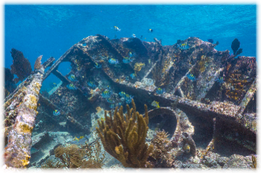

Biscayne National Park is located in Florida. It is only accessible by boat because 95% of the park is water! Most of it is a coral reef and the remaining 5% is a mangrove forest on the shore.
The park can be divided into four ecosystems - shoreline swamp, shallow seashore, coral limestone keys and offshore deep water. The park harbors not only rich animal and plant life that includes small fish, seagrass, sponges, corals, molluscs, crustaceans, manatees, sea turtles, birds and big fish like whales but there are 44 shipwrecks hidden under water!
The shipwrecks date from the 16th century when the Spanish treasure fleet sailed past the Florida Keys. The ships were often caught in hurricanes. The shipwrecks are protected archaeological sites.